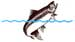
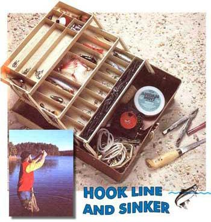
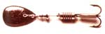
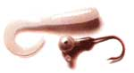
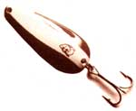
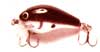

Hook Line And Sinker
Some suggestions for stocking the basic tackle box.
By Bruce Woods
May/June 1989
Of course, when talking about building a basic tackle collection from the bottom up, there are many more artificial lures, as well as the more prosaic hooks, leaders and sinkers, to consider. But first, we're going to have to define a few parameters. For one thing, I'm going to have to limit my discussion to equipment for the angler using spinning or spin-casting gear (though much of it will meet the needs of the bait-casting-rod user as well). These are, I think, the rigs most commonly used by beginners-probably because they're relatively inexpensive and easy to master. In addition, the goodies described here will be specifically aimed at the species mentioned above, and therefore at the freshwater pond, lake or river angler. (A few of the lure choices will, however, prove effective against such smaller, inshore saltwater species as sea trout, young bluefish, Spanish mackerel and so forth.) Finally, though anglers with a total of several hundred years' of fishing experience are called upon in putting this article together, the gear recommended here should be considered basic. It will allow you to catch fish just about anywhere within the parameters defined above, but nothing can beat the on-the-spot observation of what's catching a particular species on a particular body of water at a particular time. Keep your eye on the anglers who are catching fish (use binoculars to watch them if you have to!), and add their secret weapons to the arsenal described below.
Hooks
You can probably cover most needs by purchasing a number of hooks both snelled (with sections of leader tied to them) and unsnelled in sizes 4, 6 and 8 (that's going from larger to smaller). These will handle most live baits (worms, minnows, crawfish, etc.) as well as the firmer types of doughballs or stinkbaits used for carp and catfish. Remember, it's easier to catch a big fish on a small hook than vice versa.
Nothing can beat on-the-spot observation when selecting a lure.
Sinkers
Buy a variety pack of split-shot sinkers (for live-bait fishing with bobbers and to add casting heft to jigs and spinners as needed), an assortment of bullet weights (to use with plastic worms) and a sampling of wire-eyed "bass" or "bait-casting" sinkers. When using the last two types, stick with the smallest sinker that will allow you to cast effectively or, when bottom fishing, that will hold your bait in place.
Snap Swivels
You'll need these to prevent your lures from twisting and kinking the fishing line. Those that are about an inch long will do for most applications.
Bobbers
It's hard to beat the old standby red and white plastic ball bobber. Get a few sizes, to handle smaller and larger bait-sinker combinations. Any design that grips the line firmly enough to stay where it's set will do fine.
Leaders
Keep a small spool of four-pound-test (or even two-pound) monofilament line in your tackle box. When the water is clear, a three-foot length of this fine material between your fishing line and bait or lure will often bring more strikes. (Of course, it could also result in more tackle lost to snags or large fish. You pays your money and you takes your chances. When fishing with lures, you can usually figure that if you're not occasionally losing hardware, you're probably not catching much either.)
Tools
It's wise to keep in your tackle box a pair of pliers, a small knife and a hook disgorger (use it only on fish you intend to keep; if they're hooked deeply and are to be released, cut the line near their mouths). Some tools-like the Leatherman survival tool or the bigger Swiss army knives-will have about everything you need in one unit. (You may want a special-purpose filet knife as well.) One of the small, waterproof, machined-aluminum flashlights will also come in awfully handy, as will a low-cost tape measure when you're fishing for species protected by size limits.
Matches
Keep them sealed in a moisture-tight con tainer, and change them at regular intervals.
Stringer
The type with the large safety-pin-like clips will keep your fish submerged and fresh until you're ready to clean them.
Spare Parts
Super Glue (or a similar brand), duct tape and a spare tip top (the line guide that tops your rod) can help prevent a simple accident's ruining your entire fishing trip.
Spinners
I suppose if I had to limit myself to one type of artificial lure, it'd be either the spinner or the jig (or even one of the combination spinner-jigs available today). Every tackle box should have a selection of these lures in the 1/8- to 3/8 ounce range. You won't go wrong selecting the Mepps mentioned above, or those produced by Panther Martin or Rooster Tail. Incidentally, in any lure, try to keep at least one on hand that has some red on it. Last fall, while visiting friends in Alaska, one of our group lost the only red-bladed spinner in camp. We were ignored by the rainbow trout in the nearby river until I cut a piece of red plastic from a bread bag and fastened it to the hook of a copper-bladed Mepps. The second cast with that cobbled-together creation resulted in a 17-incher.
A more recent development in the spinner world is commonly called the "spinner bait." This lure features a wobbling metal blade on one end of a safety-pin assembly and a fringed or plastic-bodied jig on the other. It has developed into one of the more reliable bass baits around.
Jigs
Consisting of a weighted hook decorated with anything from feathers to hair to science-fiction creations of gaudy soft plastic, the jig is among the most versatile of lures. It can be bounced up and down verti cally (from a boat anchored over cover or through a hole in the ice) or cast and worked along the lake bed's contour like a plastic worm. Get a variety of colors, and concentrate on the 1/32-, 1/16- and 1/8-ounce sizes.
Artificial Worms
I was still a boy when plastic worms revolutionized bass fishing, and they remain at the top of the list for these, and other, fish today. You'll face a bewildering array of designs, colors ("electric grape"? "motor oil"?) and even flavors. Select a few of them; they're inexpensive and, when rigged with one of the bullet weights mentioned above, can be bounced across the bottom, worked through relatively thick underwater cover or reeled more rapidly to swim past suspended fish. In a pinch the tails can even be cut off and rigged behind a split-shot to produce an emergency jig for pan fish.
Spoons
If you cut the business end off a dinner spoon and tied your line to its front end and a hook to its back, you'd quickly see where this long-popular lure got its name (you'd probably catch fish with the thing, too). The basic red-with-white-stripe Dardevle, in 1/1(,-, 1/4- and 1/5-ounce sizes, can be effectively cast or trolled behind a slow boat to take any of the fish mentioned in the introduction to this article. Since I started fishing with artificial baits, I've never been without one except by accident. Another old standby, which has seen quite the rebirth of popularity among today's thick-cover bass anglers, is Johnson's Silver Minnow. It was one of the first weedless lures and works as well today as it did back in the days when we assumed politicians were honest. There are many other fine spoons on the market, ranging from earring-sized baubles designed to be fished with fly rods, to chunks of hardware weighing 3 1/4 ounces or more. I certainly haven't tried them all, but I'd as soon start a fishing trip without my knife as I would without a sampling of spoons at hand.
Try night-fishing surface plugs for thrilling strikes.
Plugs
Time was, all fishing plugs were handcarved and hand-painted--their designs brought to life in back-yard workshops, their perfection pursued with all the passion and faith of the alchemist's search for the philosopher's stone. Today, in fact, it's perfectly possible for anyone with basic whittling skills to design and construct a plug that will catch fish, and doing so is one of angling's special thrills. For the most part, though, you'll have a lot more success using any of a number of the still finely made (though not always wood and not often handcrafted) plugs available commercially.
As mentioned above, my personal first choice would be a Flatfish-brand swimming minnow. These plugs have withstood the test of time, and-in the appropriate size and color-can be counted on to catch their share of any of the species we're concentrating on here. If I had to chose one, it'd probably still be the X4 size (or maybe the slightly smaller F7) in the red or the red-top, white-bottom coloration. That one lure will serve for largemouth and small mouth bass, walleyed pike, rock bass and other large pan fish, and big trout. Other sizes and colors, as you want to add them to your collection, will only increase the varieties of fish you can catch and the fun you'll have.
You'll probably want one or more of the popular crank-baits, as well. These deep-diving lures have a pronounced lip to allow them to plane down into the water as they're retrieved. There are any number of excellent brands on the market. You'll do best if you try to match the size and coloration of the minnows or fry that your chosen quarry is currently feeding upon.
Every tackle box should also be home to one or more of the torpedo-shaped minnow lures made by Rapala, Rebel, Cabela's and others. Something in the 1/4-ounce size should attract most of the species we're chasing. If you occasionally have a chance to fish salt water, though, pick up a larger one in a silver or mackerel finish.
Finally, you'll want to stock at least one topwater plug, if for no other reason than the fact that coaxing a fish to a smashing surface strike will do wonders for your adrenaline level. I've had great luck over the years with the two-inch black Arbogast jitterbug, but other anglers give top awards to the Heddon Torpedo, the Ozark Mountain Woodchopper and others. Pick out one and remember to work it slowly, letting the water surface become completely still between each series of chugs, pops or gurgles. If you find you like surface fishing (try it at night!), you'll end up experimenting with every lure you can get your hands on.
Box It Up
My childhood tackle box was an inexpensive aluminum single-compartment toolbox. And one of the most dreaded midwinter chores of my youth was the task of organizing that grab bag for the season to come. It's amazing how an assortment of hooks, spoons, spinners, plugs, scraps of line, and snells can meld themselves into a single tangle that would make undoing the Gordian knot seem simple. When you add a few plastic worms that have dissolved under the influence of heat and the various solvents that find their way into the typical tackle box, you can wind up with a mess that would convince all but the poorest or thriftiest angler to just dump everything out and start over. There's little excuse for that sort of problem today, though, because the market is rich with inexpensive, sturdy tackle boxes that feature enough compartments of various sizes to keep all of those lusty lures from their attempts at procreation. Look at the offerings of Plano, Fenwick and others, check your wallet, and eyeball your tackle. Then buy a box with more space than you think you'll need. It's a rare angler who, no matter how well equipped, can resist a new lure or a suddenly productive local killer. Unless you do a lot of fishing, you can count on your tackle collection to grow faster than snags, broken-off lunkers or borrowing friends can thin it out.
The Last Cast
So there you have it. I'm confident that the basic stock of equipment outlined here will, with skillful angling and a little luck, catch fish under most circumstances a beginning angler is likely to face. There are, again, a candy-storeful of other temptations waiting on the shelves of any decently equipped sporting goods store, and even all of the fisherfolk who contributed to this article didn't agree with every lure we included or left out. But for the beginning angler (maybe a fishing-crazy birthday boy or girl?), this relatively inexpensive collection of hooks, lines and sinkers will provide fishing pleasure far beyond its price, and will serve up healthful food and irreplaceable memories for years to come.
|
 © MICHAEL SOLURI |
 © MICHAEL SOLURI |
© MICHAEL SOLURI |
|
 © MICHAEL SOLURI |
 © MICHAEL SOLURI |
 © MICHAEL SOLURI |
|
 © MICHAEL SOLURI |
 © MICHAEL SOLURI |
|